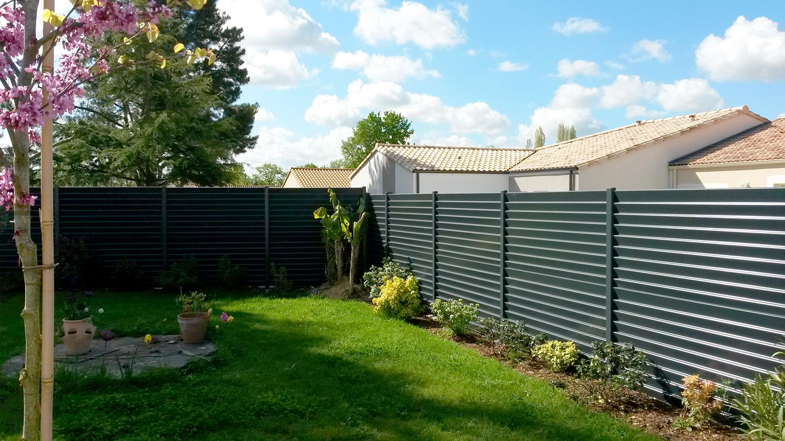

Pose de cloture et grillage, rigide ou souple
La pose de cloture ou grillage, c'est quoi ?
La vidange de fosse septique consiste à retirer les boues et les matières solides accumulées dans la fosse pour garantir son bon fonctionnement. Cela concerne aussi bien la fosse septique que les bacs à graisse, qui permettent de filtrer les graisses avant que les eaux ne soient rejetées dans le réseau d'assainissement. Vider la fosse septique et entretenir les bacs à graisse est essentiel pour éviter tout engorgement. Si la vidange n'est pas effectuée régulièrement, cela peut entraîner des complications comme le débouchage de la fosse septique. Nous intervenons à Paris pour réaliser la vidange fosse septique dans les meilleures conditions.
Quand installer une cloture ou un grillage ?
Il est recommandé de faire une vidange fosse septique tous les 2 à 3 ans en fonction de la taille de la fosse et du nombre de personnes dans le foyer. Pour les bacs à graisse, une vidange est conseillée plus fréquemment, environ une fois par an. Si des signes de dysfonctionnement apparaissent, comme des mauvaises odeurs ou un écoulement lent, il est nécessaire de prévoir rapidement une vidange de fosse septique pas cher. Pour éviter le débouchage de fosse septique, une vidange préventive est toujours la meilleure solution. Nous proposons nos services à Paris pour l'entretien et la vidange régulière de vos fosses septiques et bacs à graisse.
Prix pose cloture, Prix pose grillage
Pour toute question ou pour un devis de pose de clôture ou de grillage, contactez-nous au 06 41 39 82 25 ou via notre formulaire en ligne. Rénov Exterieur réalise l’installation de clôtures et de grillages adaptés à vos besoins en sécurité et en esthétique. Nos tarifs varient en fonction des matériaux choisis, de la longueur et de la complexité du terrain. Faites appel à notre expertise pour une installation solide et durable.